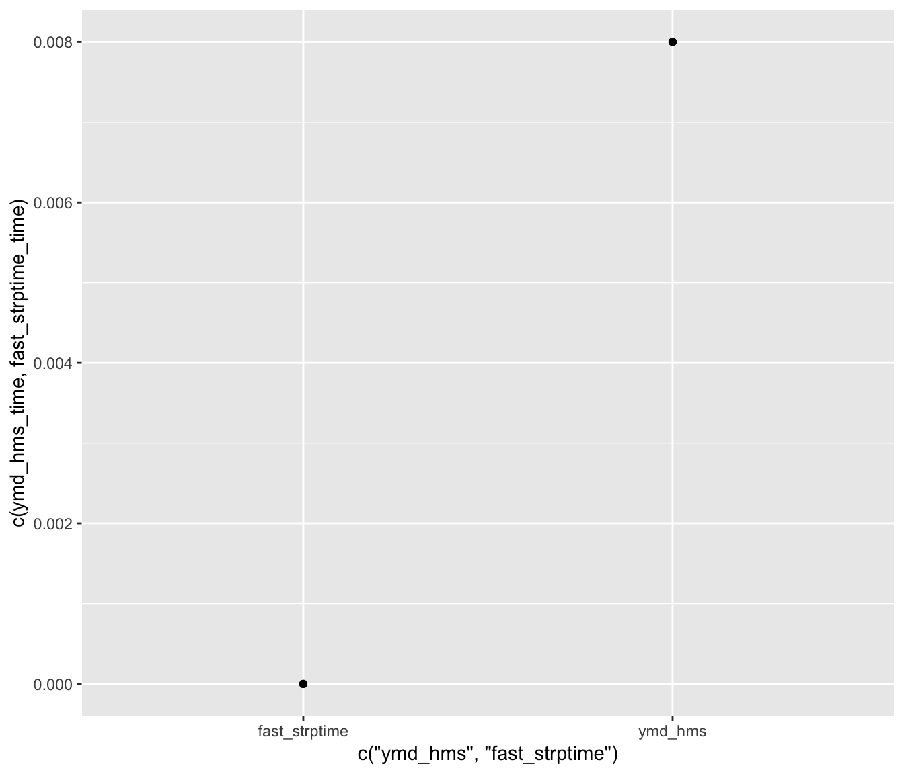

vignettes/performance-optimisation.Rmd
performance-optimisation.RmdThis vignette examines the performance of different computations implemented in the BirdTrackingEtl package.
During first profiling rounds, the slowest step turned out to be the date time parsing that happens during tracking data validation. Initially, lubridate’s ymd_hms function was used but this turned out to be slow:
times <- c("2015-04-20 12:32:44", "2015-04-21 12:32:44", "2015-04-22 15:32:44",
"2015-04-22 12:32:44", "2015-04-22 12:35:44", "2015-04-23 16:32:44",
"2015-04-23 12:32:44", "2015-04-20 12:32:44", "2015-04-25 18:32:44"
)
ymd_hms_time <- as.numeric(system.time(ymd_hms(times))[3])
fast_strptime_time <- as.numeric(system.time(fast_strptime(times, "%Y-%m-%d %H:%M:%OS"))[3])
q <- qplot(x=c("ymd_hms", "fast_strptime"), y=c(ymd_hms_time, fast_strptime_time))
q + geom_point()
So, ymd_hms was replaced by fast_strptime. This cut off 73% of the track_validation step processing time.
d <- profiling_L1("../data/bird_track_logs_2000L.csv", "../data/two_birds.csv")
q <- qplot(x=d$step, y=d$timing)
q + theme(axis.text.x = element_text(angle = 90, hjust = 1))After further investigation of the validate_tracks_data function, this turns out to be due to the fact that parsing date_times is slow.